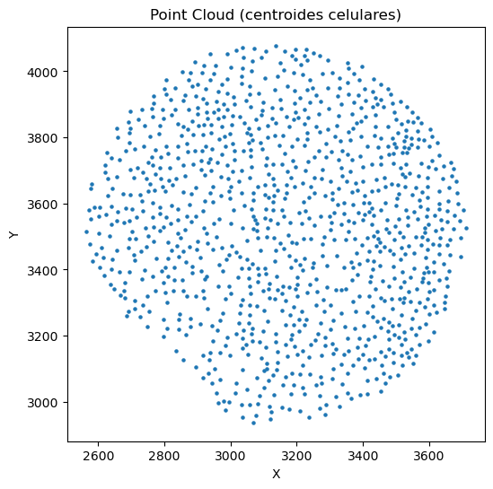
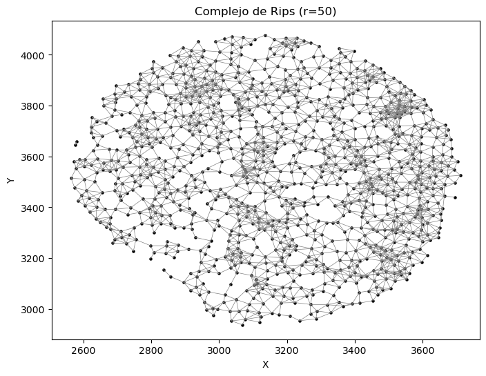

Mostrar código
import os
import numpy as np
import pandas as pd
import matplotlib.pyplot as plt
import gudhi as gdimport os
import numpy as np
import pandas as pd
import matplotlib.pyplot as plt
import gudhi as gdruta = "https://raw.githubusercontent.com/HaydeePeruyero/tda-cell-patterns-workshop/main/data/carcinoma_FA_HN14_2.csv"
df = pd.read_csv(ruta)
x = df["X_centroid"].to_numpy()
y = df["Y_centroid"].to_numpy()
puntos = np.column_stack((x, y))
print(f"Número de puntos: {len(puntos)}")Número de puntos: 1030plt.figure(figsize=(6,6))
plt.scatter(x, y, s=5)
plt.title("Point Cloud (centroides celulares)")
plt.xlabel("X")
plt.ylabel("Y")
plt.show()
radio = 50
rips_complex = gd.RipsComplex(
points=puntos,
max_edge_length=radio
)
simplex_tree = rips_complex.create_simplex_tree(
max_dimension=2
)
print("Número de simplices:", simplex_tree.num_simplices())Número de simplices: 9121plt.figure(figsize=(8,6))
plt.scatter(x, y, color="black", s=5)
for simplex in simplex_tree.get_skeleton(1):
if len(simplex[0]) == 2:
i, j = simplex[0]
plt.plot(
[x[i], x[j]],
[y[i], y[j]],
color="gray",
linewidth=0.5
)
plt.title(f"Complejo de Rips (r={radio})")
plt.xlabel("X")
plt.ylabel("Y")
plt.show()
diag = simplex_tree.persistence()
print("Primeros valores:")
print(diag[:10])Primeros valores:
[(1, (36.50843414019692, inf)), (1, (34.89826559940533, inf)), (1, (34.94464363154827, inf)), (1, (35.07773869438781, inf)), (1, (35.08834896071297, inf)), (1, (35.147632669852634, inf)), (1, (35.21930408753491, inf)), (1, (35.3060076839965, inf)), (1, (35.31815355881978, inf)), (1, (35.488743972397636, inf))]plt.figure(figsize=(6,6))
gd.plot_persistence_diagram(diag)
plt.title("Diagrama de persistencia")
plt.show()usetex mode requires TeX.<Figure size 600x600 with 0 Axes>
output = pd.DataFrame(
[[dim, b, d] for dim, (b, d) in diag if dim <= 2],
columns=["dimension", "birth", "death"]
)
output.head()| dimension | birth | death | |
|---|---|---|---|
| 0 | 1 | 36.508434 | inf |
| 1 | 1 | 34.898266 | inf |
| 2 | 1 | 34.944644 | inf |
| 3 | 1 | 35.077739 | inf |
| 4 | 1 | 35.088349 | inf |
output| dimension | birth | death | |
|---|---|---|---|
| 0 | 1 | 36.508434 | inf |
| 1 | 1 | 34.898266 | inf |
| 2 | 1 | 34.944644 | inf |
| 3 | 1 | 35.077739 | inf |
| 4 | 1 | 35.088349 | inf |
| ... | ... | ... | ... |
| 1418 | 0 | 0.000000 | 12.049791 |
| 1419 | 0 | 0.000000 | 11.872265 |
| 1420 | 0 | 0.000000 | 11.576476 |
| 1421 | 0 | 0.000000 | 10.783573 |
| 1422 | 0 | 0.000000 | 10.608011 |
1423 rows × 3 columns
import os
import requests
import numpy as np
import pandas as pd
import gudhi as gd
# ============================================================
# 1. OBTENER LISTA DE ARCHIVOS DESDE GITHUB
# ============================================================
api_url = (
"https://api.github.com/repos/"
"HaydeePeruyero/tda-cell-patterns-workshop/contents/data"
)
contenido = requests.get(api_url).json()
archivos = sorted([
f["name"]
for f in contenido
if f["name"].endswith(".csv")
])
print("Archivos encontrados:")
for archivo in archivos:
print("-", archivo)
# ============================================================
# 2. RUTA RAW DE GITHUB
# ============================================================
ruta = (
"https://raw.githubusercontent.com/"
"HaydeePeruyero/tda-cell-patterns-workshop/main/data/"
)
# ============================================================
# 3. CREAR CARPETA DE SALIDA
# ============================================================
os.makedirs("resultados", exist_ok=True)
# ============================================================
# 4. PROCESAR TODOS LOS ARCHIVOS
# ============================================================
for archivo in archivos:
print(f"\nProcesando: {archivo}")
# -------------------------
# Cargar datos
# -------------------------
df = pd.read_csv(ruta + archivo)
# -------------------------
# Coordenadas
# -------------------------
x = df["X_centroid"].to_numpy()
y = df["Y_centroid"].to_numpy()
# -------------------------
# Nube de puntos
# -------------------------
puntos = np.column_stack((x, y))
print(f"Número de puntos: {len(puntos)}")
# -------------------------
# Complejo de Rips
# -------------------------
rips_complex = gd.RipsComplex(
points=puntos,
max_edge_length=50
)
simplex_tree = rips_complex.create_simplex_tree(
max_dimension=2
)
# -------------------------
# Homología persistente
# -------------------------
diag = simplex_tree.persistence()
# -------------------------
# Convertir a DataFrame
# -------------------------
output = pd.DataFrame(
[[dim, b, d] for dim, (b, d) in diag if dim <= 2],
columns=["dimension", "birth", "death"]
)
# -------------------------
# Guardar resultado
# -------------------------
nombre_salida = archivo.replace(".csv", "_diag.csv")
output.to_csv(
os.path.join("resultados", nombre_salida),
index=False
)
print(f"Guardado: resultados/{nombre_salida}")Archivos encontrados:
- carcinoma_FA_HN14_2.csv
- dysplasia_FA_HN11A_1.csv
- stroma_ad_carcinoma_FA_HN14_3.csv
- stroma_ad_dysplasia_FA_HN11A_5.csv
Procesando: carcinoma_FA_HN14_2.csv
Número de puntos: 1030
Guardado: resultados/carcinoma_FA_HN14_2_diag.csv
Procesando: dysplasia_FA_HN11A_1.csv
Número de puntos: 1035
Guardado: resultados/dysplasia_FA_HN11A_1_diag.csv
Procesando: stroma_ad_carcinoma_FA_HN14_3.csv
Número de puntos: 1045
Guardado: resultados/stroma_ad_carcinoma_FA_HN14_3_diag.csv
Procesando: stroma_ad_dysplasia_FA_HN11A_5.csv
Número de puntos: 1049
Guardado: resultados/stroma_ad_dysplasia_FA_HN11A_5_diag.csvimport os
import requests
import numpy as np
import pandas as pd
import gudhi as gd
# ============================================================
# 1. OBTENER LISTA DE ARCHIVOS DESDE GITHUB
# ============================================================
api_url = (
"https://api.github.com/repos/"
"HaydeePeruyero/tda-cell-patterns-workshop/contents/data"
)
contenido = requests.get(api_url).json()
archivos = sorted([
f["name"]
for f in contenido
if f["name"].endswith(".csv")
])
print("Archivos encontrados:")
for archivo in archivos:
print("-", archivo)
# ============================================================
# 2. RUTA RAW DE GITHUB
# ============================================================
ruta = (
"https://raw.githubusercontent.com/"
"HaydeePeruyero/tda-cell-patterns-workshop/main/data/"
)
# ============================================================
# 3. CREAR CARPETA DE SALIDA
# ============================================================
os.makedirs("resultados", exist_ok=True)
# ============================================================
# 4. PROCESAR TODOS LOS ARCHIVOS
# ============================================================
for archivo in archivos:
print(f"\nProcesando: {archivo}")
# -------------------------
# Cargar datos
# -------------------------
df = pd.read_csv(ruta + archivo)
# -------------------------
# Coordenadas
# -------------------------
x = df["X_centroid"].to_numpy()
y = df["Y_centroid"].to_numpy()
# -------------------------
# Nube de puntos
# -------------------------
puntos = np.column_stack((x, y))
print(f"Número de puntos: {len(puntos)}")
# -------------------------
# Complejo de Rips
# -------------------------
rips_complex = gd.RipsComplex(
points=puntos,
max_edge_length=100
)
simplex_tree = rips_complex.create_simplex_tree(
max_dimension=2
)
# -------------------------
# Homología persistente
# -------------------------
diag = simplex_tree.persistence()
# -------------------------
# Convertir a DataFrame
# -------------------------
output = pd.DataFrame(
[[dim, b, d] for dim, (b, d) in diag if dim <= 2],
columns=["dimension", "birth", "death"]
)
# -------------------------
# Guardar resultado
# -------------------------
nombre_salida = archivo.replace(".csv", "_diag.csv")
output.to_csv(
os.path.join("resultados", nombre_salida),
index=False
)
print(f"Guardado: resultados/{nombre_salida}")Archivos encontrados:
- high_grade_displasia_FAAGSCC_13_HGD_15.csv
- high_grade_displasia_FAAGSCC_13_HGD_2.csv
- high_grade_displasia_FAAGSCC_13_HGD_7.csv
- invasive_carcinoma_AGSCC_1_IC_18.csv
- invasive_carcinoma_AGSCC_1_IC_24.csv
- invasive_carcinoma_AGSCC_1_IC_28.csv
- light_grade_displasia_F82P1_LGD_5.csv
- light_grade_displasia_F82P1_LGD_6.csv
- stroma_ad_high_grade_displasia_FAAGSCC_13_HGD_4.csv
- stroma_ad_high_grade_displasia_FAAGSCC_13_HGD_7.csv
- stroma_ad_invasive_carcinoma_AGSCC_1_IC_111.csv
- stroma_ad_invasive_carcinoma_AGSCC_1_IC_99.csv
- stroma_ad_light_grade_displasia_F33P1_LGD_7.csv
- stroma_ad_light_grade_displasia_F81P1_LGD_1.csv
Procesando: high_grade_displasia_FAAGSCC_13_HGD_15.csv
Número de puntos: 2005
Guardado: resultados/high_grade_displasia_FAAGSCC_13_HGD_15_diag.csv
Procesando: high_grade_displasia_FAAGSCC_13_HGD_2.csv
Número de puntos: 2012
Guardado: resultados/high_grade_displasia_FAAGSCC_13_HGD_2_diag.csv
Procesando: high_grade_displasia_FAAGSCC_13_HGD_7.csv
Número de puntos: 2038
Guardado: resultados/high_grade_displasia_FAAGSCC_13_HGD_7_diag.csv
Procesando: invasive_carcinoma_AGSCC_1_IC_18.csv
Número de puntos: 2008
Guardado: resultados/invasive_carcinoma_AGSCC_1_IC_18_diag.csv
Procesando: invasive_carcinoma_AGSCC_1_IC_24.csv
Número de puntos: 2020
Guardado: resultados/invasive_carcinoma_AGSCC_1_IC_24_diag.csv
Procesando: invasive_carcinoma_AGSCC_1_IC_28.csv
Número de puntos: 2022
Guardado: resultados/invasive_carcinoma_AGSCC_1_IC_28_diag.csv
Procesando: light_grade_displasia_F82P1_LGD_5.csv
Número de puntos: 2006
Guardado: resultados/light_grade_displasia_F82P1_LGD_5_diag.csv
Procesando: light_grade_displasia_F82P1_LGD_6.csv
Número de puntos: 2014
Guardado: resultados/light_grade_displasia_F82P1_LGD_6_diag.csv
Procesando: stroma_ad_high_grade_displasia_FAAGSCC_13_HGD_4.csv
Número de puntos: 2005
Guardado: resultados/stroma_ad_high_grade_displasia_FAAGSCC_13_HGD_4_diag.csv
Procesando: stroma_ad_high_grade_displasia_FAAGSCC_13_HGD_7.csv
Número de puntos: 2015
Guardado: resultados/stroma_ad_high_grade_displasia_FAAGSCC_13_HGD_7_diag.csv
Procesando: stroma_ad_invasive_carcinoma_AGSCC_1_IC_111.csv
Número de puntos: 2010
Guardado: resultados/stroma_ad_invasive_carcinoma_AGSCC_1_IC_111_diag.csv
Procesando: stroma_ad_invasive_carcinoma_AGSCC_1_IC_99.csv
Número de puntos: 2031
Guardado: resultados/stroma_ad_invasive_carcinoma_AGSCC_1_IC_99_diag.csv
Procesando: stroma_ad_light_grade_displasia_F33P1_LGD_7.csv
Número de puntos: 2007
Guardado: resultados/stroma_ad_light_grade_displasia_F33P1_LGD_7_diag.csv
Procesando: stroma_ad_light_grade_displasia_F81P1_LGD_1.csv
Número de puntos: 2003
Guardado: resultados/stroma_ad_light_grade_displasia_F81P1_LGD_1_diag.csv